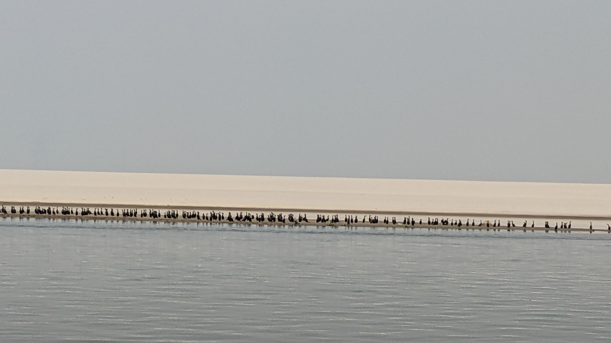
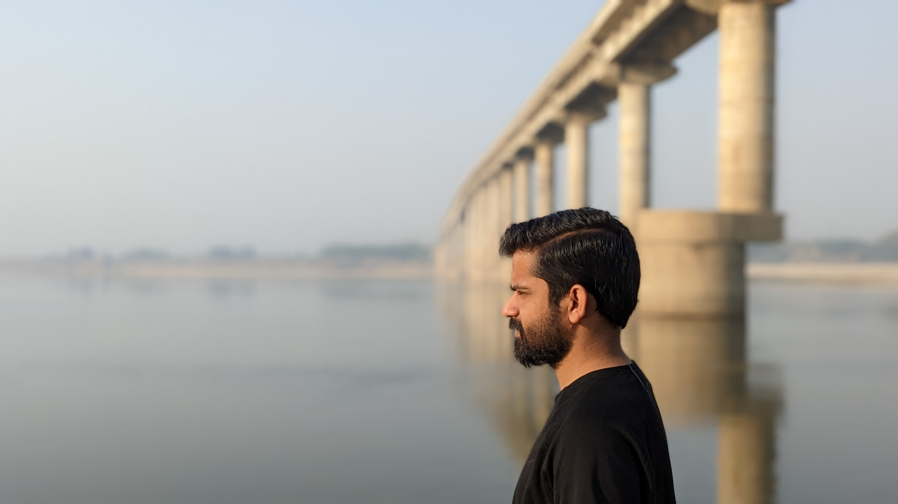

Rajat Choudhary
Research ScholarIndian Institute of Technology Delhi
Industry
Academia
Doctoral Student at IIT Delhi | Hydro-climatic eXtremes Research Group (HydroX)
Area of Interest
Moisture tracking/Sources of Moisture (water vapour/precipitable water transport).
Hydrological Modelling.
Hydrological Extremes.
Education
Indian Institute Of Technology–Delhi (IIT–Delhi)
Doctor of Philosophy Sept 2020-PresentAtmospheric Moisture Tracking.
Indian Institute Of Technology–Palakkad (IIT–Palakkad)
MS(Research)-Water Resource Engineering July 2018 - July 2020A Modified Calibration Approach for SWAT Model to Improve the Process Representation.
Indian Institute Of Technology–Madras (IIT–Madras)
MS(Research)-Semester Exchange July 2018 - December 2018MS-Course Work
National Institute of Technology Hamirpur (NIT Hamirpur)
B Tech., Civil Engineering July 2013 - June 2017Static and Dynamic analysis of ITI Karsog Building,Himachal Pradesh.
Work
Research Experience
MS Scholar,IIT Palakkad July 2018 - July 2020Proposed a modified calibration approach for the Soil and Water Assessment Tool (SWAT) model, which helps to improve the process dynamics in model through constraining the parameters.
Industrial Experience
Graduate Engineer Trainee,Larsen & Toubro July 2017 - December 2017Construction of Water treatment and Sewage Treatment Plants
Structural analysis using STAAD Pro
Research Work
Publications
Choudhary, R., & Athira, P. (2021). Effect of root zone soil moisture on the SWAT model simulation of surface and subsurface hydrological fluxes. Environmental Earth Sciences, 80(18), 1-16.
Rajat and Athira, P. (2021). Calibration of hydrological models considering process interdependence: A case study of SWAT model. Environmental Modelling & Software, 144, 105131.
Conferences
Rajat and Athira P (2020). A Comparative Study on Different Calibration Approaches for Streamflow Prediction in Swat Model. 17th Annual Meeting of Asia Oceania Geosciences Society HS-02
Field Activities
Varanasi, India.






Address
Rajat (Research Scholar)
Water Resources Engineering Section
Department of Civil Engineering
Indian Institute of Technology (IIT) Delhi
Hauz Khas, New Delhi - 110016, India.